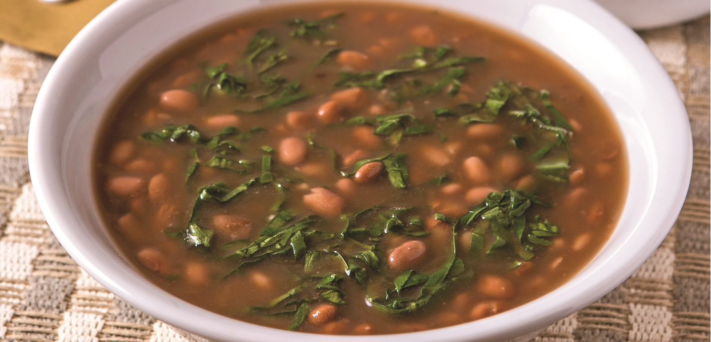

O Will é uma pessoa que aparenta ser muito humilde, ele batalhou muito para chegar aonde está hoje e sempre entregou resultados satisfatórios. Pelo ponto de vista profissional, é uma inspiração para mim, venho de um lugar periférico e um dia quero conquistar tantas coisas quantos ele tem conquistado. Como um bônus, Will aparenta ser uma pessoa incrível e ótima companhia, imagina só: Comendo um feijão bem temperado com o “Fresh Prince of Bel-Air”.
| Ingredientes | Quantidade |
|---|---|
| feijão-carioquinha cru | 170g |
| água | 800 ml |
| tempero pronto | 1 sachê |
| sal | 1 cl. de chá |
| folha de louro | 1 unid. |
| óleo | 1 cl. de sopa |
| alho | 2 dentes |
Passo 1
Deixe o feijão de molho por 2 horas.
Passo 2
Escorra e transfira para uma panela de pressão.
Passo 3
Junte a água, o tempero pronto, o sal e o louro.
Passo 4
Deixe cozinhar, em fogo baixo, por 20 minutos após o início da fervura.
Passo 5
Em uma frigideira média, coloque o óleo e leve ao fogo alto para aquecer. Junte o alho e refogue rapidamente até dourar.
Passo 6
Adicione uma concha dos grãos do feijão cozido e amasse-os com uma colher.
Passo 7
Volte o refogado à panela de pressão e deixe cozinhar, com a panela semi-tampada, por 10 minutos, ou até encorpar ligeiramente.
Passo 8
Retire do fogo e sirva em seguida.
Passo 9
Bom Apetite!
